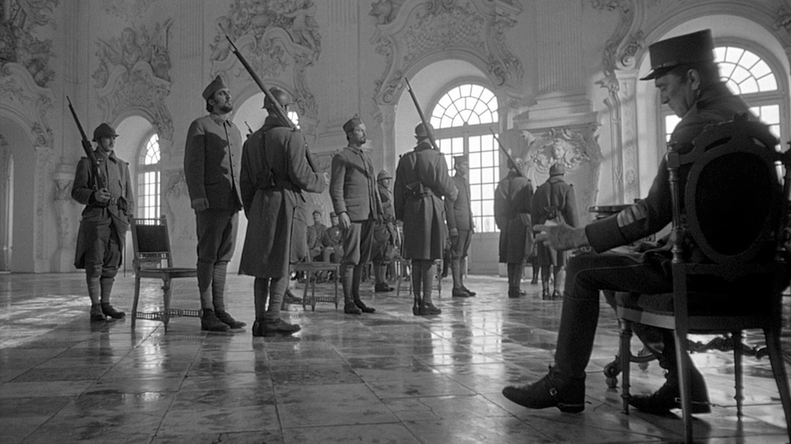
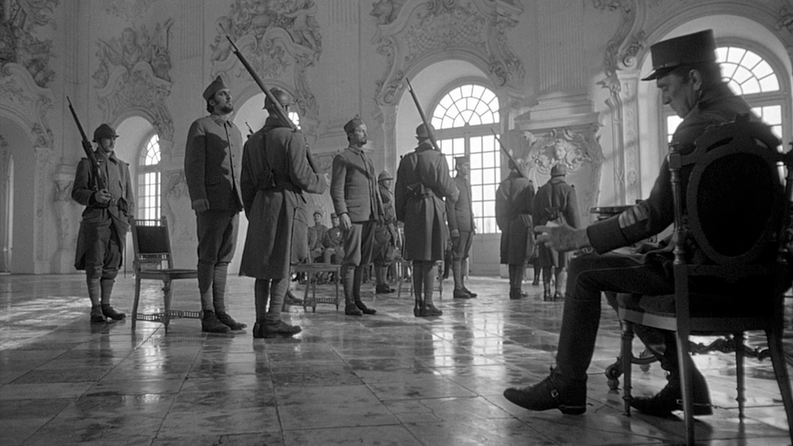
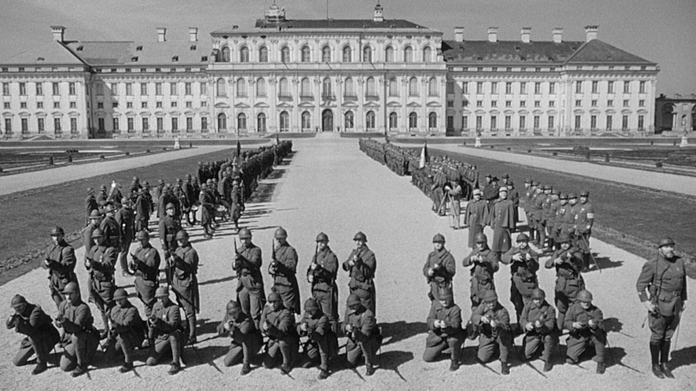
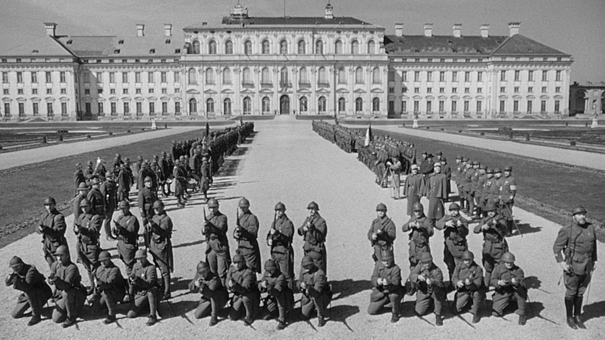

Paths of Glory (1957)
Si la pelicula All Quiet in the Western Front expreso la cruda realidad de la guerra, cuando el patriotismo y espiritu de aventura se desvanecen, en Path of Glory el tema a abordas es la incompetencia de los altos mandos militares. Oficiales de carrera para los cuales la vida de sus soldados era igual de apreciadas como las municiones y las armas. La conquista de puntos estrategicos enemigos, en un frente estatico, conllevaban prestigios, condecoraciones y posibilidades de ascenso. La primera escena de este film, transcurre en una trinchera en rodaje continuo del unico lugar posible de resgaudarse de los disparos y artilleria enemiga. Esta guerra es sucia, ruidosa, fria pero a la vez asfixiante.
 

 
